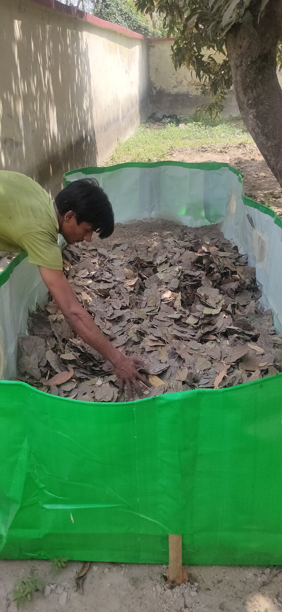
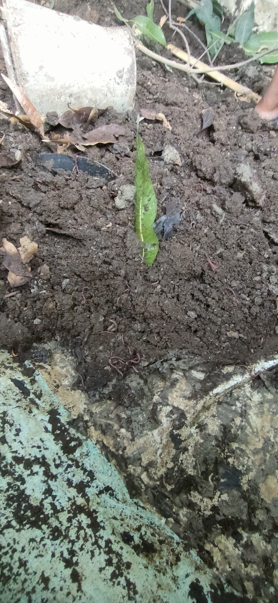
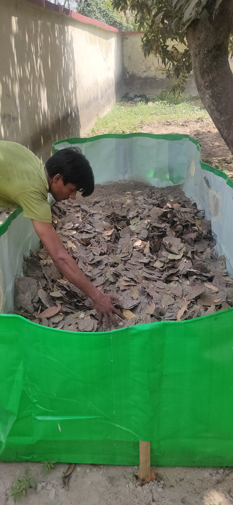
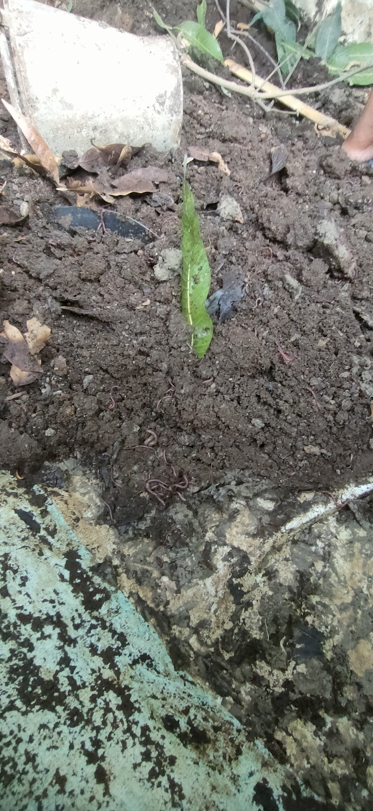

Key challenges faced by Urban Poor are:
- Low Income: Urban poor households have limited financial resources, making it difficult for them to afford the basic necessities of life.
- Inadequate Housing: Many urban poor individuals live in informal settlements or slums, often lacking proper housing infrastructure. These areas may lack basic amenities such as clean water, sanitation, and electricity.
- Limited Access to Education: Due to financial constraints and other barriers, the urban poor may face challenges in accessing quality education for themselves and their children.
- Healthcare Challenges: Access to healthcare services may be limited for the urban poor, leading to health issues that can further impact their economic well-being.
- Unemployment or Underemployment: The urban poor often struggle to find stable and well-paying jobs, contributing to their economic vulnerability.
- Social Exclusion: Discrimination and social exclusion can be prevalent, limiting opportunities for the urban poor to access resources, services, and opportunities.
- Vulnerability to Shocks: The lack of financial resources and social support can make the urban poor particularly vulnerable to economic shocks, such as job loss, illness, or other emergencies.
- Informal Economy: Many urban poor individuals may be engaged in the informal economy, which lacks job security, benefits, and legal protections.
In order to provide them with a solution as a leverage to improve their living standards and support them with inclusive employment opportunities we have planned an inclusive solution
SUSTAINABLE CITIES
Theoretically, A sustainable city is one that strives to meet the needs of its current residents without compromising the ability of future generations to meet their own needs. Achieving sustainability in a city involves addressing environmental, economic, and social considerations.
Rapid urbanisation and population growth due to rural-to-urban migration and natural population increase. The speed of urbanisation often outpaces the development of adequate infrastructure, leading to unplanned settlements and informal housing. The rapid growth of cities may exacerbate economic disparities, with a concentration of wealth in certain areas and the development of pockets of poverty in others. The urban poor often settle in locations with limited economic opportunities and inadequate services.
In order to make the cities sustainable it is essential to include the urban poor into the mainstream economic activities. One of the easiest opportunities for employment and entrepreneurship development is urban waste management, recycling and creating products out of urban waste.

 



.jpg)
.jpg)
.jpg)